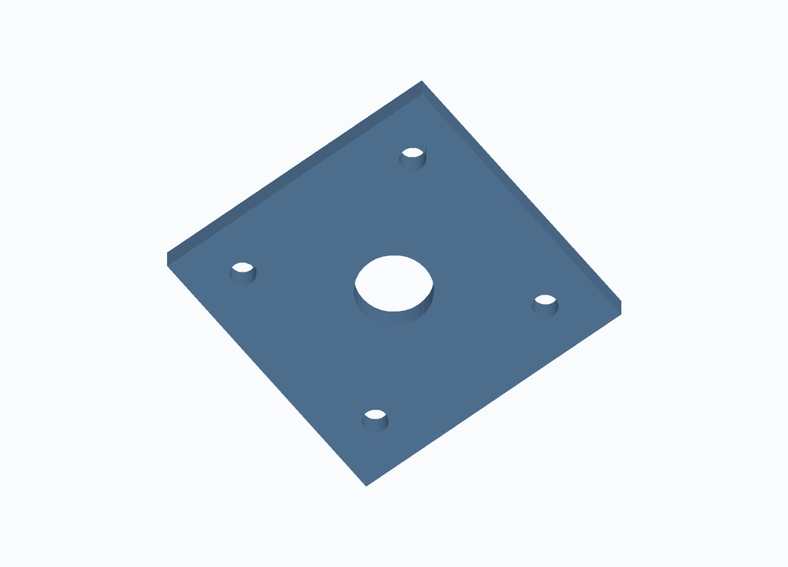

一句话需求：120×120×10 安装法兰：4×Ø10 沉孔位（本件为通孔）+ 中心 Ø30 通孔，检查能否下料/钻孔。

图为 STL 光栅渲染示意，不是 CAD 截图；判定针对的是 input.step（AP242）。
| 规则 | 判定 | 内核消息 |
|---|---|---|
manufacturing/min_wall_thickness | allow | minimum wall thickness satisfies the threshold |
manufacturing/hole_penetration | allow | through holes open to free exterior / blind-hole remaining walls satisfy the provisional threshold |
manufacturing/draft_angle | 未判 | draft angle of curved faces needs the general draft analysis (not judged) |
manufacturing/sliver_face | 未判 | sliver ratio of curved faces needs face-area integration (not judged) |
quality/non_manifold | allow | topology validates and is manifold |
assembly/interference | 未判 | assembly interference needs two non-empty bodies |
manufacturing/blade_thin_section | allow | curved thin section satisfies the minimum thickness |
manufacturing/hole_depth_ratio | allow | hole depth-to-diameter ratios are within the threshold |
manufacturing/sharp_internal_corner | 未判 | no measurable concave planar edge (curved geometry) |
quality/small_feature | allow | smallest feature (B-rep edge) satisfies the minimum feature size |
manufacturing/undercut | allow | no undercut patch was found for the given pull direction |
manufacturing/min_hole_diameter | allow | all cylindrical hole diameters satisfy the threshold |
manufacturing/wall_thickness_uniformity | 未判 | no thin-wall sample lies below maxWallThickness |
quality/stress_concentration_corner | 未判 | no measurable concave planar edge (curved geometry) |
manufacturing/missing_fillet | 未判 | edge transition or measurement lies inside the decision band |
manufacturing/bridge_span | allow | all ceiling spans are within the span/thickness limit |
manufacturing/overhang_angle | allow | no unsupported downward face above the build-plate skin |
manufacturing/step_height_ratio | allow | step/riser heights are within the step-height ratio |
manufacturing/residual_wall | allow | residual wall around all holes satisfies the minimum |
quality/opening_radius | reject | a hole opening has no rounded/chamfered transition of the required size |
$env:ZNK2_LICENSE_FILE = '...\znk2-internal.lic'
znk2_cli.exe adjudicate --file input.step
# 工件 SHA256 9C4027E1FC48F046127B85D0E8738DE7…（完整值见 verdict.json 的 artifact_sha256）配方（每步 stdin JSON）与完整判定证据在仓库 cases/c01/；本页数字与仓库产物同一次运行产出。